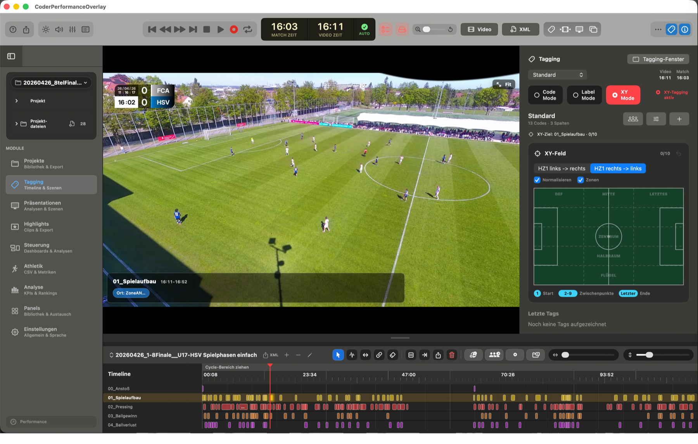

Trainer & Coaches
Spielszenen sammeln, Feedback vorbereiten und Inhalte schnell in Besprechungen einsetzen.
Coder Performance
Coder Performance Analysis bündelt Projektverwaltung, Videoplayer, Tagging, Highlights, Präsentationen, Exporte und Analyseansichten in einem macOS-Workflow. Die App ist bewusst zugänglich für Einsteiger und gleichzeitig belastbar genug für professionelle Analysearbeit.
Für Trainer, Analysten, Lehrende, Vereine, Akademien und professionelle Umgebungen, die Video, Daten und Kommunikation an einem Ort zusammenführen wollen.

Zielgruppe
Coder Performance Analysis soll nicht nur Spezialisten vorbehalten sein. Die Oberfläche bleibt ruhig und verständlich, während die Werkzeuge genug Tiefe für ambitionierte und professionelle Anwender bieten.
Spielszenen sammeln, Feedback vorbereiten und Inhalte schnell in Besprechungen einsetzen.
Projekte, Videos, XML-Daten, Highlights und Auswertungen in einem sauberen Arbeitsfluss halten.
Wiederkehrende Spielanalysen, Präsentationen und Team-Workflows verlässlich strukturieren.
Analyseprozesse nachvollziehbar erklären und junge Analysten an professionelle Abläufe heranführen.
Workflow
Die App führt typische Analysearbeit in einem klaren Ablauf zusammen: Projekte anlegen, Videos importieren, Szenen markieren, Highlights filtern, Präsentationen bauen und Daten exportieren.

Spiele, Videos, XML-Daten und Analyseinhalte bleiben pro Projekt strukturiert zusammen.
Tagging, Highlight-Filter und Wiedergabe helfen dabei, relevante Momente schnell wiederzufinden.

Ergebnisse können für Meetings, Feedback und weiterführende Auswertungen vorbereitet werden.
Module
Die Module sind so aufgebaut, dass einzelne Anwender sofort starten können und professionelle Teams trotzdem eine belastbare Struktur für wiederkehrende Analyseprozesse erhalten.
Projektdateien, Videos und Exporte sind im Finder-ähnlichen Arbeitsbereich gebündelt.
Szenen können vorbereitet und für Team- oder Spielerfeedback strukturiert gezeigt werden.
Tagging-Informationen und Leistungsdaten werden für Auswertungen und Dashboards nutzbar.
Videos, Szenen, Tags und Wiedergabe bleiben eng miteinander verbunden.
Gefilterte Szenen können als Highlight-Sammlung vorbereitet und weiterverwendet werden.
XML-Workflows und Projektexporte schaffen Anschluss an bestehende Analyseumgebungen.
Preis & Lizenz
Coder Performance Analysis wird im App Store für 149 Euro verfügbar sein. Es gibt kein Abo und keine laufenden Lizenzgebühren. Innerhalb der gekauften Version sind alle Updates kostenfrei enthalten. Bezug und reguläre Updates laufen über den App Store.
Einmalzahlung, kein Abo
Mac App Store
Die reguläre Version wird über den Mac App Store bereitgestellt. Der finale Produktlink wird hier hinterlegt, sobald die App-Store-Seite verfügbar ist.
Für Nachwuchsleistungszentren und größere Ausbildungsstrukturen kann es außerhalb des App Store individuelle Bundles mit Anpassungen und abweichenden Konditionen geben.
Kompatibilität
Coder Performance ist die macOS-Zentrale für Projekte, die aus Coder Mobile, Coder Phone oder anderen Analysequellen kommen.
Fragen zu Coder, App-Store-Versionen, Bundles oder individuellen Anpassungen kannst du direkt per E-Mail stellen.
Für Support, Feedback, App-Store-Fragen und individuelle Bundles für Nachwuchsleistungszentren.